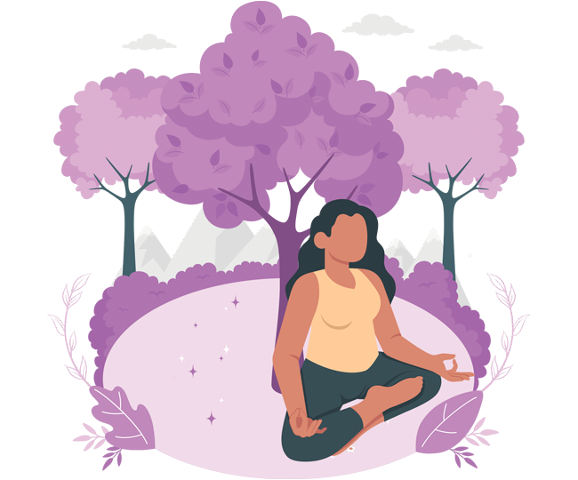

PASO 1:
Diagnóstico psicoemocional y organizacional
¿PARA QUÉ?
Las integrantes se conozcan a sí mismas y a sus compañeras
con las que compartirán sus procesos
Deliza para ver más
¿CÓMO?
Danzoterapia - Biodanza
Reflexión individual y colectiva a partir de preguntas
generadoras
Bio-decodificación
Enganche de Cook para equilibrar la respiración
Mandala integrado
¿CON QUÉ?
Un espacio agradable que posibilite desconectarse de las
actividades cotidianas
Plumones, hojas de colores, ropa cómoda, música, reproductor
de música
Flores, copal, ofrendas individuales y colectivas
Música relajante
Fotos que nos identifiquen
RECOMENDACIONES
Que las actividades las faciliten especialistas en contención
emocional
Si no es posible que las hijas y los hijos se queden en casa,
que una personas distinta al grupo apoye en su
cuidado
Proponer música entre las integrantes
PASO 2:
DIGANÓSTICO INTEGRAL
¿PARA QUÉ?
Conocer el estado de salud física, nutricional y emocional de
las integrantes
Deliza para ver más
¿CÓMO?
Un diagnóstico en cada área que incluye revisión médica y
nutricional
Obtener la edad metabólica en comparación con la edad
cronológica
Diagnóstico psicológico
Diagnóstico nutricional
Plan de acción para fortalecer cada área
¿CON QUÉ?
Servicios de laboratorio
Recursos financieros o convenios para solventar, se podrían
gestionar recursos en especie o dinero para hacer posible cada
diagnóstico
Disposición de cada integrante para iniciar con el diagnóstico
y plan de acción
Recomendaciones
Promover la toma de conciencia y responsabilidad de cada
integrante para llevar a cabo tanto el diagnóstico como el
plan de acción
Reconocer las debilidades de salud de cada compañera,
acompañarla y respetar su proceso
PASO 3:
MAPA CORPORAL
¿PARA QUÉ?
Reconocer e identificar el estado de salud física y emocional
en que nos encontramos
Deliza para ver más
¿CÓMO?
Acostadas en un tapete o frazada, tomar una postura cómoda
Cerrar los ojos y realizar varias respiraciones que permitan relajarse
Una vez relajada hacer un escaneo por todo el cuerpo comenzando por los pies, tobillos, pantorrillas, rodillas, piernas, glúteos, vientre, estómago, espalda, hombros, cuello, garganta, ojos, boca, naríz, oreja, cuero cabelludo, nuca, etc.
En una hoja tamaño carta con la imagen de una silueta, cada una identifíca con color rojo donde sienta malestar y con color azul donde no lo haya.
Compartir en plenaria los descubrimientos sobre su mapa corporal
Identificar y aceptar las propias debilidades propias para fluir
Escuchar a cada compañera, sus experiencias de vida y acompañarla para tener un cuerpo sano
¿CON QUÉ?
Tapete o frazada
Impresión de siluetas en hojas tamaño carta
Colores rojo y azul para cada una
Música relajante y para bailar
Recomendaciones
Que el ejercicio sea a través del audio reconociendo nuestro
cuerpo
Si alguien requiere acompañamiento psicológico invitarla y/o
acompañarla a gestionarlo
Descargar el mapa corporal como una guía para hacer
ejercicio
PASO 4:
HERRAMIENTAS DE AUTOCUIDADO PSICOEMOCIONAL
¿PARA QUÉ?

Disminuir la ansiedad.
Utilizarlas como medidas de prevención de autocuidado
Deliza para ver más
¿CÓMO?
A través de varios ejercicios que se hacen por separado, uno por sesión.
Ejercicios de respiración para reducir el estrés.
Herramientas de autocuidado psicoemocional
Ritual: hacer un círculo y colocar en el centro una veladora además un objeto significativo
para cada una de las participantes.
Realizar ejercicios de relajación para disminuir el estrés.
Sigue las instrucciones
Luz violeta: imaginar una esfera de luz violeta a la altura del pecho y colocar en ella la situación que nos
está generando la ansiedad, pidiéndole que se transforme y realizar respiraciones profundas y consientes hasta
lograr un equilibrio de bienestar.
¿CON QUÉ?
De acuerdo con los ejercicios se puede requerir:
Música suave y relajante de fondo en cada ejercicio.
Sillas y/o tapetes.
Veladoras
Flores aromáticas
Ropa cómoda
Recomendaciones
Los ejercicios pueden ser aplicados por personas que atiendan a grupos en el tema de autocuidado,
terapeutas o psicólogas.
PASO 5:
EXPRESAR ENOJO-DESPROGRAMAR
¿PARA QUÉ?
Cada integrante identifique aquello que le genera enojo, frustración, incomodidad, etc.
que se convierte en una limitante o una coraza en su actuar.
Deliza para ver más
¿CÓMO?
A través de un ejercicio grupal, que permita identificar los enojo, expresarlo corporal y
verbalmente, con libertad para gritar, llorar... en un ambiente seguro y de autocuidado, regalando frases como
"ya basta", "ya no más", etc.
Llevar el ejercicio a la reflexión individual, reflexión grupal y a la desprogramación.
Realizar un dibujo que represente los aprendizajes rescatados en este ejercicio y el compromiso para seguir cuidándose
y fortaleciendo sus límites.
¿CON QUÉ?
En un espacio que brinde seguridad y confianza para la que cada integrante se sienta con libertad de expresar sus sentimientos de enojo sin
lastimarse ni lastimar a sus
compañeras.
Recomendaciones
Generar un ambiente seguro,
confiable sin juicios
Libreta y pluma para anotar sus reflexiones
Disposición de las integrantes para compartir en plenaria su enojo y miedos.
PASO 6:
PLAN DE AUTOCUIDADO
¿PARA QUÉ?
Plasmar las acciones de autocuidado que requieren ser atendidas.
Ordenar con base a la prioridad de necesidades todas las acciones a realizar a lo largo de un tiempo determinado
y después evaluar su desarrollo y resultado. Este plan de autocuidado puede derivar del mapa corporal
(ver tarjeta de Mapa Corporal).
Deliza para ver más
¿CÓMO?
Se lleva a cabo respondiendo a los siguientes parámetros:
Necesidades físicas.
Necesidades mentales/emocionales.
Necesidades espirituales.
Necesidades energéticas
Necesidades para la seguridad digital
¿CON QUÉ?
Mapa corporal.
Diagnóstico integral.
Agendar las acciones y tiempos para llevar a cabo las acciones.
Recomendaciones
Evaluar periódicamente.
Tener la disponibilidad y asumir la responsabilidad para lograrlo.
Renovarlo de manera frecuente.
PASO 7:
CONOCER Y PONER EN PRÁCTICA LA NUTRICIÓN FEMINISTA
¿PARA QUÉ?
Para aprender a mirar de manera compasiva y amorosa nuestra cuerpa con un equilibrio
físico y emocional.
Deliza para ver más
¿CÓMO?
Cuestionándome el sistema patriarcal, capitalista y sus mandatos hacia nuestra cuerpa.
Reconocer otra forma de alimentación saludable y consciente de manera intuitiva
Ponemos en práctica la nueva información y diseñamos menús saludables, ricos y fáciles.
¿CON QUÉ?
Presentación expositiva PPT.
Reflexión colectiva con preguntas detonadoras.
Trabajos en equipos para la elaboración de menús.
Hojas y plumones.
Diario de alimentación intuitiva.
Recomendaciones
Asesoría de especialista en nutrición con enfoque feminista y/o compañeras que manejen el enfoque de género.
PASO 8:
TÉCNICA DE LOS ESPEJOS
¿PARA QUÉ?
Fortalecer el concepto de empatía.
Deliza para ver más
¿CÓMO?
Generar un ambiente de confianza.
Las integrantes del grupo caminan por todo el espacio.
Cada participante elige a una compañera para continuar el ejercicio en parejas.
La facilitadora indica transitar desde la niñez a la adultez, reconociendo en su compañera sus vivencias, emociones,
perdidas, gozo, a través de la frase. "Tu como yo" ...
Se continúa con el ejercicio haciendo un reconocimiento a la compañera y autoconocimiento de nuestra fuerza,
capacidad, resiliencia y potencial.
Para finalizar hay que abrazar a su pareja y posteriormente un abrazo colectivo.
¿CON QUÉ?
Espacio amplio para caminar libremente.
Música suave de fondo.
Palabras poderosas y positivas.
Kit de primeros auxilios.
Cojines.
Agua.
Velas.
Recomendaciones
Preferentemente que la actividad sea coordinada por una especialista que facilite la contención emocional.
PASO 9:
COMUNICACIÓN ASERTIVA
¿PARA QUÉ?
 Favorecer la comunicación y la resolución de conflictos.
Deliza para ver más
¿CÓMO?
Ejercicio por parejas. A y B y cada una expresa a la vez una situación Hablando en primera persona:
Favorecer la comunicación y la resolución de conflictos.
Deliza para ver más
¿CÓMO?
Ejercicio por parejas. A y B y cada una expresa a la vez una situación Hablando en primera persona:
Yo siento.
Yo necesito.
Propongo que...
Y por mi lado me comprometo
Agradecimiento individual y grupal.
¿CON QUÉ?
Técnica de dialogo asertivo
Un espacio de seguridad, confianza y sin juicios
Música Relajante.
Flores.
Recomendaciones
Disposición de las personas para llevar a cabo estos pasos...
PASO 10:
LIMPIEZA ENERGÉTICA CON HIERBAS
¿PARA QUÉ?
Limpiar el cuerpo, espíritu y el entorno de energías pesadas y bloqueos.
Deliza para ver más
¿CÓMO?
Formar un ramo de plantas curativas de la localidad (por ejemplo, albaca, romero, ruda, pericón, geranio, limón,
moringa, mirto, etc.)
Con el ramo se limpia cada una de las partes del cuerpo iniciando por la cabeza, prestar atención a la nuca,
hombros y riñones.
Una vez terminada la limpia envolver las hierbas en papel, puedes utilizarlas para composta o tirarlas.
¿CON QUÉ?
Hierbas que tradicionalmente se identifican para limpiar la energía.
Recomendaciones
Incluir en la limpia un masaje corporal (cabeza, ojos, oídos, etc.)
PASO 11:
SEGURIDAD DIGITAL
¿PARA QUÉ?
Identificar los riesgos en materia de seguridad digital
Identificar la importancia sobre la alfabetización digital para identificar los riesgos y retos en la vida cotidiana
del trabajo, hogar; en plataformas digitales, banca electrónica y aplicaciones para vínculos sociales.
Deliza para ver más
¿CÓMO?
Mediante un manual de instrucciones básicas para:
Redes sociales (etiquetado, publicaciones, etc.)
Chats privados y colectivos.
Plataformas digitales como Zoom, Moodle, Meet.
Banca electrónica.
Anti-Spyware.
Correo electrónico
Sexting.
Anonimatic.
Contraseñas.
Violencia digital.
Ley Olimpia
¿CON QUÉ?
Documento impreso y digital. Caja de herramientas de seguridad digital.
Dispositivo móvil (tableta, cel, etc.) Aplicaciones móviles con ejemplos de uso y buenas practicas.
Videotutoriales cortos.
Protocolo para identificar violencia digital de Ges Mujer.
Recomendaciones
Reconocer que la seguridad digital también es importante
Ampliar información en la página de Ges Mujer.
Compartir experiencias de buenas practicas.
En caso de violencia digital, buscar apoyo con Ges Mujer o instituciones afines.
PASO 12:
POLÍTICAS DE AUTOCUIDADO VS ACTIVIDADES
¿PARA QUÉ?
Identificar la importancia que tiene realizar actividades para el autocuidado como una política institucional
establecida (ejemplo: Baile de las 12:00)
Deliza para ver más
¿CÓMO?
Una compañera de la institución coordina la actividad, se encarga de tocar el timbre para convocar a sus compañeras
a las 12:00 del día, selecciona la música y reproduce la canción.
Las compañeras acuden, escuchan la música, se desconectan por un momento de sus actividades y bailan.
¿CON QUÉ?
Espacio amplio, seguro y confiable para promover el movimiento y la movilidad con libertad.
Recomendaciones
Ponderar la actividad de autocuidado para seguirla manteniendo como política institucional.
PASO 13:
POLÍTICAS INSTITUCIONALES DE AUTOCUIDADO
¿PARA QUÉ?
 Incorporar de manera sistemática acciones que favorezcan el autocuidado colectivo y la salud organizacional.
Deliza para ver más
¿CÓMO?
Un documento que concentra las buenas prácticas realizadas en cada una de las claves que integran la labor en la organización.
Incorporar de manera sistemática acciones que favorezcan el autocuidado colectivo y la salud organizacional.
Deliza para ver más
¿CÓMO?
Un documento que concentra las buenas prácticas realizadas en cada una de las claves que integran la labor en la organización.
Integración, responsables, tiempos y movimientos para llevarlos a cabo y su proceso de evaluación y medición para
reformular cada política establecida.
Es un documento institucional, vivo, inacabado y en construcción colectiva.
¿CON QUÉ?
La integración de todas las buenas practica que han funcionado en un documento que contempla la corresponsabilidad y la temporalidad.
Documento impreso y digital para ser leído en colectivo, socializarse y al alcance de cada compañera del equipo.
Recomendaciones
Sumar mejoras colectivas.
Evaluación recurrente.
Integración de nuevas políticas.
Erogación de políticas obsoletas.
Socialización de los indicadores y sus avances.